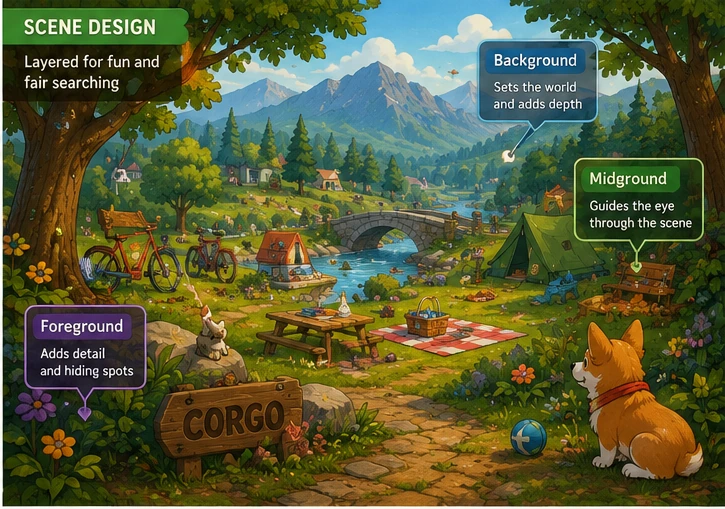
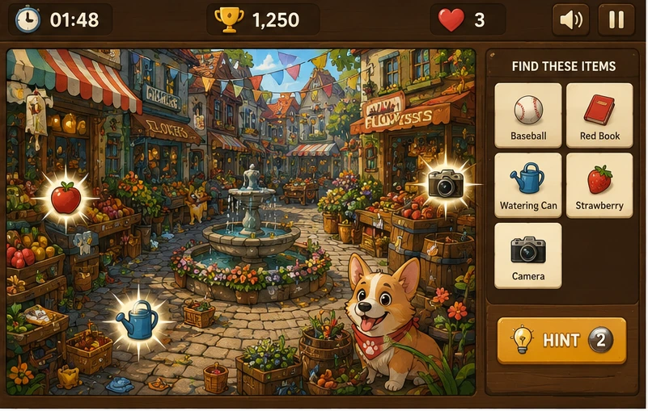

Corgo has officially made the jump from illustrated character to playable browser game.
That sounds neat in one sentence.
In practice, it meant taking a cute, static world and figuring out how to turn it into something people could actually interact with without losing the charm that made it work in the first place.
A Corgo web game sounds simple on paper. Hide some objects, add a timer, make the scenes fun, done. Very “look at me, I have invented Where’s Waldo with short legs.”
But as soon as I started treating it like a real project, the important questions showed up.
What art style should it use?
How busy can a scene get before it becomes frustrating instead of fun?
How hidden should the items be?
How do you make the world feel playful without making it unreadable?
And maybe most important: how do you keep Corgo feeling like Corgo when the character is no longer sitting inside a book illustration and is now part of a game people are actively scanning and clicking through?
That is the part I wanted this article to cover.
The Corgo web game started with the art style
Before the game mechanics mattered, the visual style had to make sense.
Corgo already had a personality and a world around him. The browser game could not suddenly look like a random stock puzzle app that happened to have a corgi dropped into it at the last minute.
I wanted the game to feel bright, friendly and immediately readable.
That pushed the look toward a classic search-and-find style:
- Chunky shapes - Clear silhouettes - Bright color - Playful clutter - Layered scenes - Strong separation between objects - Enough detail to feel rich - Not so much detail that the image turns into visual soup
That balance matters more than people think.
If a hidden-object game is too empty, it feels boring. If it is too dense, it stops being fun and becomes an eye exam with grass.
Corgo also needed to remain instantly recognizable in every scene. Same general shape language. Same visual charm. Same simple, lovable little potato-dog energy.
That consistency was important because the game is not just about finding random objects. It is also about spending time in Corgo’s world.
Hidden-object games live or die on scene design
A search game is not really about the interface first.
It is about the scenes.
That was one of the biggest lessons in building this.
Every level needs to work as an image before it works as a game.
The scene has to be attractive enough that someone wants to look at it, but structured enough that the player can actually search it. That means foreground, midground and background all matter. The eye needs places to travel.
I wanted the environments to feel like storybook worlds rather than flat puzzle boards.
So each scene needed:
- A clear setting - Distinct landmarks - Visual depth - Areas of clutter - Areas of rest - Good color separation - Enough objects to keep searching interesting
At the same time, the game needed objects that were hidden but still fair.
That is the whole trick.
Really hidden is fun.
Impossible is not fun.
There is a tiny design line between “aha, there it is” and “this game is messing with me and I am one missed click away from becoming a villain.”
Good scene design lives right on that line.

The hardest part was hiding objects without breaking the art
This sounds obvious now, but hidden objects cannot feel pasted in.
If the target item looks like it was awkwardly dropped into the scene five minutes before launch, the illusion dies immediately.
The best hidden-object scenes make the targets feel like they belong there.
That meant the objects needed to match the scene style, scale and lighting. They had to sit naturally in the world while still being findable. A toy should feel like it belongs on the grass. A sock should feel believable near a house or path. A bone should not feel like it was teleported in by an intern with poor judgment.
This became a game of visual camouflage.
Not the “make it invisible” kind.
The “make it belong just enough” kind.
Sometimes that meant overlapping shapes. Sometimes it meant placing an item near similar colors. Sometimes it meant tucking an object partly behind something else. Sometimes it meant using the edges of the environment in a smarter way.
Every object had to earn its hiding spot.
The browser format changed the design decisions
Designing for a browser game changes things compared with a print image or a static illustration.
In a book image, the only job is to look good and support the page.
In a browser game, the image has to support gameplay, scale correctly, load cleanly and remain readable across different screen sizes.
That changes composition.
A scene that looks great as a big illustration may not read as clearly inside a browser window. Tiny details can disappear. Some hiding places become too difficult. Important shapes can get lost once the image is resized.
So part of building the Corgo web game was thinking less like an illustrator and more like a game designer.
I had to ask:
- Will this scene still read on a smaller display? - Are the targets visually distinct enough? - Is the clickable search area fair? - Does the level still work if the player is moving quickly? - Is the environment helping the game, or only helping the image?
The browser forces honesty.
A pretty scene is not enough.
The scene has to play well.
UI matters more than people expect
The art gets the attention first, but the user interface quietly decides whether the game feels polished.
The timer, score, hints and found-object list all affect the experience.
For Corgo, I wanted the UI to support the world instead of looking like generic app chrome slapped on top of it. It needed to feel friendly and readable without stealing too much space from the image itself.
That means:
- Clear object names - Easy-to-read status elements - Visual feedback when something is found - A timer that creates energy without panic - Penalties that feel fair - Enough guidance for new players - A layout that does not crush the artwork
One of the fun parts of this project is that it sits somewhere between illustration, level design and interface design. It is not fully one thing or the other.
That weird middle space is honestly part of the appeal.
Randomization helps the game last longer
A hidden-object game can look great once and still become predictable quickly.
That is why replay value matters.
One of the smart design choices in Corgo was treating the object list as something that can vary from round to round instead of making every playthrough identical.
That way, the same scene can stay useful longer.
Players are not simply memorizing a list.
They are re-searching the world.
That makes the level feel more alive and gives the art more mileage. It also helps justify the effort that goes into building a good scene in the first place. If the environment only works once, it burns out fast.
If it can support several different target combinations, it becomes much more flexible.
There is a sweet spot between cute and challenging
Corgo is obviously playful.
That is part of the brand, part of the personality and part of what makes the project fun.
But a game still needs challenge.
If everything is too easy, the player is finished in two minutes and forgets about it.
If everything is too hard, the charm of the art does not save it.
So the goal was to keep the game welcoming while still making the search satisfying.
That usually means mixing difficulty levels inside the same scene.
Some objects should be found quickly.
Some should take a bit longer.
A few should make the player scan the image and grin when they finally notice them.
That mix creates rhythm.
A scene where every object has the same difficulty feels flat. A scene with better pacing feels more playful because the player keeps bouncing between little wins and slightly harder discoveries.

Turning a character into a game changes the relationship
This was one of the parts I found most interesting.
When a character exists in an image, you look at them.
When a character exists in a game, you interact with their world.
That is a different relationship.
Corgo is no longer only something to observe. The player is now participating inside that little universe, searching through it, noticing details, recognizing repeated visual ideas and learning how that world behaves.
That changes how the character feels.
It makes Corgo more than an illustration.
It makes the project feel like a place.
That is the part I really like.
The browser game is not replacing the illustrated side of Corgo. It is extending it.
It lets the world breathe in a different format.
Making something “simple” is rarely simple
On the surface, a browser hidden-object game sounds like one of those ideas people summarize in ten cheerful seconds.
“Just make cute scenes and hide some stuff!”
Sure.
And “just make a movie” is also technically a sentence.
The reality is that simple-looking projects are often full of invisible decisions.
Where should the player’s eye go first?
How many objects are too many?
How much clutter is helpful?
How much is chaos?
Should the score reward speed more than accuracy?
How punishing should missed clicks be?
How should the scenes escalate?
What makes one environment distinct from the next?
What makes the project feel cohesive instead of random?
Those are the kinds of questions that shape the final result even if the player never notices them directly.
Honestly, that is usually a good sign.
When creative work feels effortless, it usually means someone did the hard part in the background.
Why I wanted Corgo on the website
Part of the reason for building the game was simple: I wanted something on JasonArts.com that people could actually play.
Not just read.
Not just scroll past.
Not just glance at and move on from.
Interact with.
That is valuable for a personal creative site.
It gives the site more personality, gives visitors something memorable and lets one of my original characters exist in a more playful way.
It also helps show that my creative work is not limited to one lane.
I love 3D. I love visual storytelling. I love AI tools. I love building worlds. A browser game sits at a fun intersection of all that—art, design, interactivity and character work rolled together.
And honestly, it is just fun.
Sometimes that should be enough reason to make a thing.
What I like most about the finished result
The part I like most is that the Corgo web game still feels like Corgo.
That was the real test.
It would have been easy to make something technically functional that lost the warmth of the character along the way. Instead, the game keeps the playful identity while adding something new: participation.
The player is no longer outside the picture.
They are inside the search.
That is a cool transition for a character project.
And it opens the door to more.
More scenes. More ideas. More little worlds. Maybe more interactive projects later. Maybe other ways to let illustrated characters step beyond the page.
That possibility is one of the best parts of building something like this.
From static art to a playable world
The Corgo web game reminded me that creative projects get more interesting when they are allowed to evolve.
A character does not have to stay in one format forever.
An illustration can become a level.
A page can become a scene.
A cute idea can become a playable world.
That evolution is what made this project exciting for me.
Corgo began as a visual concept and a storytelling character.
Now there is also a browser game where people can step into that world and spend time there.
That is a satisfying leap.
And honestly, seeing a little corgi project grow legs and run around the website feels extremely on-brand.
More creative projects, characters and behind-the-scenes articles are available on the [JasonArts blog](https://www.jasonarts.com/blog).
Sources
JasonArts Home: https://www.jasonarts.com/
JasonArts Blog: https://www.jasonarts.com/blog